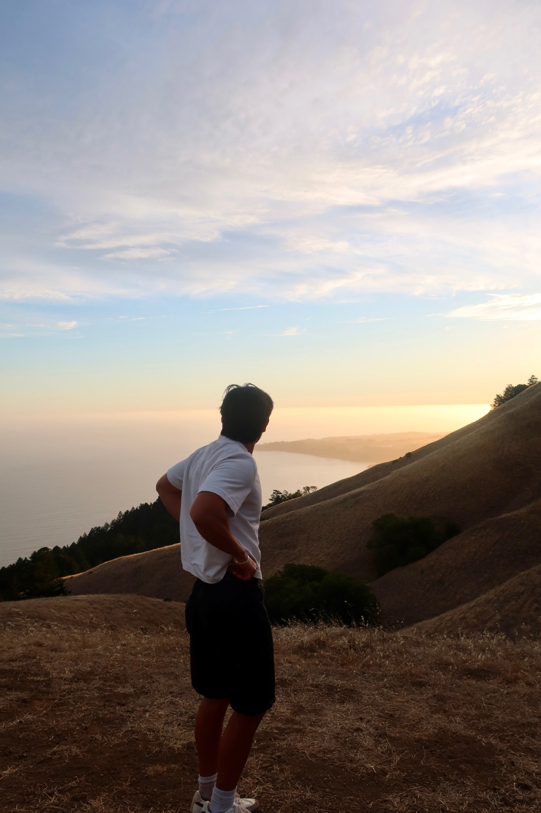

The coach reviews your transcript, a few voice measurements and six still frames from video takes. It never receives your audio. AI feedback can be wrong.
You held a steady 128 wpm, then sped up to 162 wpm around 0:41. The pause at 0:27 gave your main point room to land.
Hundreds of prompts across thirteen categories, each one rated easy, medium or hard. Speaking under that bit of pressure is what trains you to stay calm.
One random word and nothing else. There is no question to lean on, so you have to build the whole thing yourself.
No prompt at all. Record yourself for as long as you set, then watch it back in the library by full, camera only, or audio only.
One shared prompt for everyone, every day. Compare how you approached it with how your friends did.
Made on your own device with Whisper. Captions follow along as you watch, and clicking any word jumps to that moment.
All my life, I was never a great speaker. I found myself trembling uncontrollably whenever I had to speak in public, and no matter what I tried, nothing seemed to help. That's when I came across Vinh Giang, who said that the best way to get better at public speaking is to watch and listen to yourself.
There are three main things you need to do: record yourself, then replay that recording, first just the audio, then just the visual, then with a transcript, then fully again. Practicing this over and over has genuinely helped me improve, and I've seen real progress in myself.
Another way I found to get better was putting myself in pressure situations, giving myself a random topic and speaking about it for a set amount of time. Doing this trains your brain to stay calm under pressure. I'm hoping this website can help you get better at public speaking too, or that you'll simply find it useful for practice.
